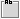

前の例 では簡易エディタと Glade インタフェース・ビルダを用いて、とてもシンプルなインタフェース・アプリケーションを構築しました。ここで紹介する例として、もっとたくさんのツールを利用し、ちょっとだけ複雑なアプリケーション "ウェブ・ブラウザ" を構築してみることにします。
多くのアプリケーションが表示するものは、HTML レンダリング・エンジンを使って内容が充実したものになっています。たとえば、Evolution や Monodoc はメッセージの描画や編集に Gtkhtml のレンダリング・エンジンを、Monodevelop では Mozilla プロジェクトの Gecko エンジンを、そして Konqueror と KMail では khtml ウィジットを利用しています。
Mono には Gtkhtml と Gecko のバインディングが含まれていますが、ここで紹介する例では Gecko のバインディングを使用することにします。Gtkhtml は電子メールやドキュメントのページといったシンプルな表示に向いていますが、Gecko はさらに機能が充実したレンダリング・エンジンであり、本格的なウェブ・ブラウザでの利用に向いています。
ここで紹介する例では、次のようないろいろなツール使用することになります:
ここで Monodevelop は必須ということではありませんが、例とそのスクリーンショットで利用することにします。
まず最初に、Monodevelop を起動して ファイル -> 新しいソリューション を選択して下さい。ダイアログが表示され、テンプレートとプロジェクトの種類をいくつか選択するよう促されます。テンプレートで "C#" を、プロジェクトの種類として "Glade# Project" を選択して下さい。すると、自動的に初期コードをいくつか生成してくれます: 先に紹介した "Hello World" のコードによく似た、ウィンドウとボタンをそれぞれ一個です。
注記: Monodevelop では Visual Studio.NET と同じ意味合いで "プロジェクト" という用語を扱っています: "ソリューション" には複数の "プロジェクト" が含まれており、そのプロジェクトには一個以上のソース・ファイルが含まれます。他のプラットフォームでは、この用語をそれぞれ "プロジェクト" と "サブプロジェクト" の一つとして表記しています。
もう一つ設定すべきステップがあります: gecko-sharp のアセンブリを、Monodevelop で使用することになる参照リストに追加します。これを行うには、左側のペインにあるタブ ソリューション の 参照 の上で右クリックし、参照の編集 をクリックして表示されるダイアログの中にある gecko-sharp のチェック・ボタンを ON にします。アセンブリを追加するということは、デフォルトのアセンブリで行えるのと同様に、Gecko オブジェクトの自動補完や文法の検証を Monodevelop に依頼するということです。
このプロジェクトの名前を MyBrowser として新しいディレクトリに保存して下さい。これでアプリケーションを作成する準備が整いました。
ここでの最初のステップはユーザ・インタフェースを構築することです。Monodevelop をご利用なら、既に MyBrowser/リソースファイル というディレクトリの中に、Glade XML ファイルが用意されています。Monodevelop が提供しているプロジェクト・ファイルの一覧からそのファイルをダブルクリックするか、あるいは Glade インタフェース・ビルダを使って開いて下さい。Monodevelop をご利用でない場合は、Glade インタフェース・ビルダを起動して新しいNOME プロジェクトを生成して、新しいウィンドウを追加して下さい。
Glade オブジェクトの window1 をダブルクリックすると、そのプロパティがプロパティ・ダイアログの中に表示されます。それから、プロパティにあるタイトルを "Glade Window" から "My Browser" に変更して下さい。
次に、 (垂直ボックス) のボタンをクリックして、window1 に貼り付けます。このときに列の数を聞かれるので、列の数を 2個にして下さい。これでウィンドウを上下に分割することができました。上半分にはボタンとツールバーを配置し、そして下半分は HTML を表示する領域にします。
ボタンの間にスペースを追加するために、3列の (水平ボックス) を先に生成した垂直ボックスの上側に配置します。
ウィンドウの上半分にある三列のカラムに、二つのボタンとテキスト・エントリを追加して下さい。二つのボタンを追加したら、プロパティ・ダイアログの中にある "ウィジット" タブのプロパティ "ストック・アイコン" から "戻る (B)" と "進む (F)" をそれぞれ選択して下さい。ストック・アイコンを使うと、利用しているデスクトップと一貫性を保つことができるようになります。さらに、ストック・ラベルはお使いの言語に翻訳されており、ローカライゼーションに対応したものになっています。
上半分で右クリックして、コンテキスト・メニューから hbox1->選択 を選択して水平ボックスを選択状態にして下さい。プロパティ・ダイアログのタブ "パッキング" を選択し、水平ボックスでウィジットをパッキングするプロパティである 広げる と 埋める を共に "いいえ" に変更して下さい。これにより、ウィンドウで利用可能なスペースを全部使うのではなく、水平ボックスで必要となる分だけウィンドウの領域を占めることになります。
ウィンドウの下半分に、 (フレーム) を追加して下さい。それから、そのフレームのラベルの上で右クリックして 削除 を選択し、ラベルを付与しないようにして下さい。あとで、このフレームの中に Glade では設定できない Gecko レンダリング・ウィジットを埋め込むことになります。
ここまでのユーザ・インタフェースは次のようになるはずです:
ここまでで、なんとなく見た感じがウェブ・ブラウザらしくなってきました！ おおよそのインタフェースが完成したら保存して、Glade を終了して下さい。
ここまでくると、プロジェクト・ウィザードが自動的に生成してくれたコードはホントに見慣れたものです:
// project created on 4/16/04 at 2:17 P
using System;
using Gtk;
using Glade;
public class GladeApp
{
public static void Main (string[] args)
{
new GladeApp (args);
}
public GladeApp (string[] args)
{
Application.Init();
Glade.XML gxml = new Glade.XML (null, "gui.glade", "window1", null);
gxml.Autoconnect (this);
Application.Run();
}
/* Connect the Signals defined in Glade */
public void OnWindowDeleteEvent (object o, DeleteEventArgs args)
{
Application.Quit ();
args.RetVal = true;
}
}
ここで、このコードを変更していくことにします。変更箇所は赤色で記しを付けてあります:
...
using Glade;
// 最初の方で、参照をアセンブリ Gecko.dll に追加しました。
// ここで注意してもらいたい点は、
// このアセンブリの名前空間から関連するクラスを使いたい旨を
// コンパイラに知らせるためにその参照を使っているということです。
// この参照を使えば、WebControl に直接アクセスすることができ、
// このコードの中で Gecko.WebControl と指定する必要がなくなるわけです。
using Gecko;
public class GladeApp
{
...
前の章で紹介したように、Glade はいろいろな UI コントロールを自動的に参照へ接続することが可能で、次のように、オブジェクトが Glade.Widget を指すよう手配してくれます:
...
public class GladeApp
{
// frame1 と entry1 を [Widgets] とタグしてあるので
// これらのウィジットを実行時に Glade が同じ名前で UI コントローラに接続してくれます
[Widget] Frame frame1;
[Widget] Entry entry1;
...
Glade は標準的なウィジットだけ提供しているので、先に生成しておいたユーザ・インタフェースの中にブラウザ用コントロールを配置することはできません。そのかわり、そのコントロールを参照する変数を使ってコードの中に直接記述することにします。その変数に "web" という名前を付けることにします。
...
public class GladeApp
{
[Widget] Frame frame1;
[Widget] Entry entry1;
// ブラウザ用コントロールの変数を定義します
WebControl web;
...
ウェブ・インタフェースを参照する変数を定義したので、ここで実際にコントロールのインスタンスを生成できます:
... Glade.XML gxml = new Glade.XML (null, "gui.glade", "window1", null); gxml.Autoconnect (this); // 最初に WebControl のデフォルトのコンストラクタを使って、インスタンスを生成します web = new WebControl(); // 次に、このインスタンスを表示するよう伝えます。 // Gecko にバグがあるのでこの文が必要なのですが、実際のところコントロールはまだ表示されません web.Show(); // 次に、このコントロールをフレーム・ウィジット上に追加します: frame1.Add(web); ...
肝心な部分はこれからです。"entry1." とまで入力すると、次の語を補完する候補の一覧がプルダウン表示されます。その一覧から、誰かがテキスト・エントリで何か入力してリターン・キーを押下するときに呼び出されるイベントである "Activated" を選択して下さい。ここで入力された文字列を URL として読み込みたいので、新しいメソッド load_url() を entry1.Activated にデリゲートする必要があります。
C# では C++ 同様に演算子のオーバーロードをサポートしているので、簡単にデリゲートを追加することができ、イベント entry1.Activated が発行されたときに呼び出されるデリゲートのリストへ文字どおりメソッド load_url() を追加できます。ということで、次に示す行を "Application.Run()" の直前に追加します。
// 後ろに load_url を定義できます
entry1.Activated += load_url;
当然、イベント entry1.Activated にデリゲートするメソッド load_url() を実装する必要があります。テキスト・エントリのコントロールから URL を受け取ることにします。Java といった他のプログラミング言語では、entry1.getText() 風に "getter" メソッドを使って実現します。一方、C# では演算子のオーバーロードに対してショートカットがあります。"Getter" や "Setter" といったメソッドも存在してはいますが、単に親オブジェクト entry1.Text のプロパティとしてデータを get したり set することも可能です: (新たに文字列を生成し、その文字列を entry1.getText() の値にセットしてから、そのデータを利用するという方法をとる必要はありません)。一見ささいなことのように思えますが、もっと複雑なケースでは文法を大変わかりやすいものにしてくれます。
...
// Glade で定義されているシグナルを接続します
public void OnWindowDeleteEvent (object o, DeleteEventArgs args)
{
Application.Quit ();
args.RetVal = true;
}
// デリゲートのシグネチャは二つの引数を受け取ります
// 一番目の引数はイベントが呼び出されるオブジェクト (ソース・オブジェクト) で、
// 二番目の引数はそのイベントの引数リストです
// 既にどこからイベントが発行されるのか既に知っているので、
// ここでは簡単に記述しています (引数リストについては気にしないで下さい)
void load_url( object source, EventArgs args) {
web.LoadUrl(entry1.Text);
}
...
ここまでのコードを保存してから、Run->全てコンパイル(A) を選択して下さい。Glade XML インタフェースのファイル gui.glade がプロジェクトのリソース・ファイルの一覧にあるので、自動的に実行形式の中に埋め込まれます。
コンパイルが済んだら、Run->実行(R) を選択するとアプリケーションを実行できます。http://go-mono.com といった URL を入力し、イベント entry1.Activated を発行させるためにリターン・キーを入力して動作を確認してみて下さい。
注意: コマンドラインからアプリケーションを起動させたい場合は、環境変数 MOZILLA_HOME をお使いの環境の LD_LIBRARY_PATH に追加する必要があります。
ユーザ・インタフェースの中でストック・コンポーネントをいくつか使っているので、GNOME はそれらのアイテムを自動的に翻訳して表示する方法を知っています。たとえば、端末から MyBrowser/bin/Debug ディレクトリへ移動してみて下さい。そこには今回のブラウザの実行形態が格納されています。そして次のコマンドを入力してみて下さい:
mono MyBrowser.exe
環境変数 LANG が日本語ならば、次のような表示になるはずです。
次のコマンドの場合:
LANG=fr_FR mono MyBrowser.exe
環境変数 LANG を fr_FR (フランスで話されるフランス語、対してカナダ (ケベック市の方言) で話されるのは fr_CA) に設定して下さい。
次のような表示になるはずです:
もっとわかりやすい例として、次のコマンドを実行してみて下さい:
LANG=he_IL mono MyBrowser.exe
he_IL はイスラエル (IL) で使用されるヘブライ語 (he) を表します。ボタンを含め標準的なユーザ・インタフェースの並び方が、ヘブライ語で実際に記述する方向である右から左へと変更されている点に留意して下さい。
ここまで学習してきたことを基にさらに発展させるには、次に示す課題に挑戦してみて下さい: